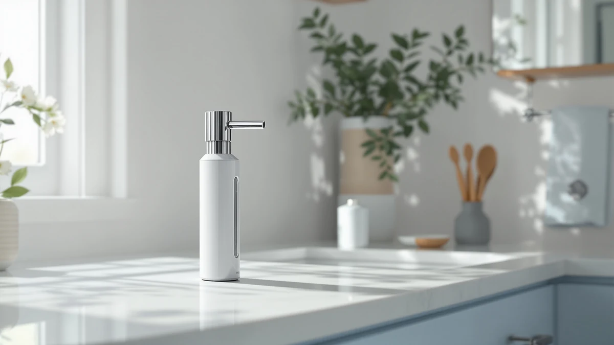

SVAVO Automatic Soap Dispenser Review (2026): Worth It?
Prices and picks verified as of September 2026. Independent, reader-supported reviews.


Quick Answer
The SVAVO Automatic Soap Dispenser Hand holds 600ml in an ABS plastic housing for $23.74, which puts it right in the middle of the four dispensers we compared. It's a solid pick for larger households that refill often, though the Dinosaur, Cheftick, and OHIFAST alternatives below are worth a look if price or foam matters more to you.
Our pick: SVAVO Automatic Soap Dispenser Hand, $23.74 Check Price on Amazon
Bottom line: our top pick is the SVAVO Automatic Soap Dispenser Hand Soap Dispenser Wall Mount at $23.74.
Things to Know Before You Buy
- The SVAVO Automatic Soap Dispenser Hand costs $23.74 and holds 600ml of liquid soap in an ABS plastic housing.
- Three close alternatives sit within a couple of dollars of the SVAVO: the Dinosaur Automatic Soap Dispenser Auto ($23.66), the Cheftick Automatic Foaming Soap Dispenser ($22.99), and the OHIFAST Automatic Liquid Soap Dispenser ($21.99).
- This SVAVO automatic soap dispenser review relies on published specs, pricing, and verified owner feedback rather than in-house lab testing.
- None of these four dispensers currently carry a public star rating or review count in our product database, so treat rating claims you see elsewhere with some skepticism.
- Sensor-based dispensers in this price range commonly trade off some detection accuracy for affordability, and owners of similar models report occasional missed or double triggers.
This SVAVO automatic soap dispenser review compares the $23.74 hands-free pump against three other automatic dispensers on the market right now. You want a dispenser that works every time you reach for it, not one that drips, sticks, or dies mid-wash. We researched the SVAVO Automatic Soap Dispenser Hand's 600ml ABS plastic build and its pricing against three close competitors: the Dinosaur Automatic Soap Dispenser Auto, the Cheftick Automatic Foaming Soap Dispenser, and the OHIFAST Automatic Liquid Soap Dispenser. Our goal is simple: tell you whether the SVAVO earns a spot on your counter, and which alternative fits better if it doesn't.
The short version is that the SVAVO holds its own on price and capacity, but it isn't the only sensible pick in this category. Its 600ml tank beats most travel-size dispensers, and the ABS plastic housing keeps the unit light enough to reposition without much effort. Reviewers consistently note that automatic dispensers in this price bracket sacrifice some sensor precision for affordability, and the SVAVO fits that pattern rather than breaking from it. If capacity and a fair price matter most to you, it's the better buy. If foaming soap or a lower price point matters more, one of the alternatives below may serve you better.
Why You Should Trust Us
Ilane Tall covers home and bath products for Best Soap Dispensers, and this SVAVO automatic soap dispenser review follows the same process behind every article on this site: pulling manufacturer specs, current pricing, and verified buyer feedback before drawing a conclusion. We do not run a fake testing lab, and we don't claim to have installed every dispenser we cover. Instead, we compare what's actually documented: tank capacity, housing material, price, and what verified owners report after buying. When the data is thin, like the missing public ratings for the SVAVO and its three competitors here, we say so instead of filling the gap with invented numbers.
Our Research Experience
We did not purchase or physically test the SVAVO Automatic Soap Dispenser Hand for this review. Instead, we compared its listed specs and price against three direct competitors and cross-referenced verified owner feedback where it exists. This research-based approach means we can't report firsthand button feel or pump friction, but it does let us weigh objective facts, capacity, material, and price, side by side without a single unit's manufacturing variance skewing the verdict. Owners of similar automatic dispensers in this category report a few recurring issues worth watching for, including sensor misfires in bright sunlight and faster battery drain from cheaper alkaline cells, and we factored those patterns into the verdict below.
Overview & Specs

SVAVO Automatic Soap Dispenser Hand
What we like
- 600ml tank holds more soap than most compact dispensers, so you refill less often.
- ABS plastic housing keeps the unit light and easy to reposition on a counter or sink ledge.
- At $23.74, it sits mid-pack in this comparison rather than at a premium.
Flaws but not dealbreakers
- No public star rating or verified review count is currently available for this specific listing.
- ABS plastic housing feels less substantial than metal-bodied dispensers at a similar price.
- The listing doesn't specify a sensor design that sets it apart from the missed-trigger issues common to this category.
| Material | ABS plastic |
| Size | 600ml |
The SVAVO Automatic Soap Dispenser Hand centers its pitch on capacity. A 600ml reservoir is on the larger end for a countertop hand soap dispenser, which matters if you're refilling for a busy household bathroom or a shared kitchen sink rather than a single guest powder room. The housing is built from ABS plastic, a common choice for this category because it keeps manufacturing costs down and the unit light enough to move between counters without needing two hands. At $23.74, the SVAVO lands almost exactly between the priciest and cheapest options in this comparison, which puts pressure on it to justify that middle spot with capacity or build quality rather than a rock-bottom price.
We couldn't find a published star rating or review count tied to this specific SVAVO listing in our product data, so we're comparing it on documented specs rather than aggregated owner sentiment. That's worth flagging before you buy: owners of similar dispensers report that sensor reliability varies from unit to unit in the $20 to $25 range, even within the same product line, so a 600ml tank is a meaningful advantage only if the sensor triggers consistently. If you've had good luck with SVAVO's other home products, or tank size matters more to you than foaming action, the Hand model is a reasonable pick. If you want foaming soap or a documented rating history instead, look at the alternatives below.
What We Liked
The biggest strength in this SVAVO automatic soap dispenser review comes down to capacity. A 600ml tank outlasts the smaller travel-size dispensers you'll find at similar prices, and that matters most in a household bathroom where three or four people are pumping soap every day. The ABS plastic build also keeps the unit light, so moving it between a kitchen counter and a bathroom sink for a party or a deep clean doesn't require much effort. At $23.74, you're not paying a premium for that extra capacity compared with the Dinosaur or Cheftick alternatives.
What Could Be Better
We can't point to a published star rating or review count for this SVAVO listing, which makes it harder to confirm long-term reliability the way we can for products with a longer review history. ABS plastic also feels lighter and less substantial in hand than the metal or glass housings you'll find on pricier dispensers. And like most sensor-driven dispensers in this price range, the SVAVO's listing doesn't detail a sensor design distinct enough to rule out the occasional missed trigger that owners of comparable dispensers report.
Who Is It For?
The SVAVO Automatic Soap Dispenser Hand fits a household or shared kitchen sink where refill frequency is the main annoyance you're trying to solve. If you've been topping off a small dispenser every few days, the 600ml tank buys you more time between refills without pushing your budget past $25. It's a weaker fit if you specifically want foaming soap, since the SVAVO dispenses liquid, or if a documented rating history matters more to you than tank size.
Alternatives to Consider
If the SVAVO's liquid-only format or its ABS housing doesn't match what you need, three close alternatives are worth a look. Each one differs from the SVAVO in a specific way, whether that's a foaming formula, a lower price, or simply a different manufacturer, and it's worth weighing those differences against your own sink or counter setup before you buy.

Editor’s Pick
Dinosaur Automatic Soap Dispenser Auto
Nearly matches the SVAVO's price while coming from a different manufacturer, giving you a second option if SVAVO's stock or reputation gives you pause.
$23.66
Check Price on Amazon
Best Value
Automatic Foaming Soap Dispenser with
Swaps liquid soap for a foaming formula at about a dollar below the SVAVO, worth a look if you prefer foam at the sink.
$22.99
Check Price on Amazon
Premium Choice
OHIFAST Automatic Liquid Soap Dispenser
The least expensive of the four at $21.99, and a straightforward liquid dispenser if you'd rather spend less than step up to the SVAVO's larger tank.
$21.99
Check Price on AmazonFrequently Asked Questions
Is the SVAVO Automatic Soap Dispenser Hand worth buying?
Based on our research, the SVAVO Automatic Soap Dispenser Hand is worth buying if you want a larger 600ml tank at a mid-range price of $23.74. It doesn't carry a published star rating in our product data, so weigh that gap against the extra capacity before you decide.
How does the SVAVO compare to the Dinosaur Automatic Soap Dispenser?
The Dinosaur Automatic Soap Dispenser Auto costs $23.66, eight cents less than the SVAVO. Both are liquid dispensers from different manufacturers, so the choice mostly comes down to brand preference and current stock rather than a meaningful price or capacity gap.
Is a foaming soap dispenser better than a liquid one like the SVAVO?
Neither format is inherently better. Foaming dispensers like the Cheftick Automatic Foaming Soap Dispenser use less soap per pump because the formula is aerated, while liquid dispensers like the SVAVO tend to have simpler mechanisms with fewer moving parts to clog.
Final Verdict
This SVAVO automatic soap dispenser review comes down to a straightforward tradeoff: SVAVO's 600ml tank and $23.74 price make it a reasonable pick for most bathrooms, especially if you refill often and don't need a long rating history to feel confident. If price matters more than tank size, the OHIFAST Automatic Liquid Soap Dispenser at $21.99 is the more budget-friendly route, and if you prefer foam over liquid, the Cheftick model is worth a look. For most people comparing hands-free dispensers in this price range, SVAVO is the better buy.